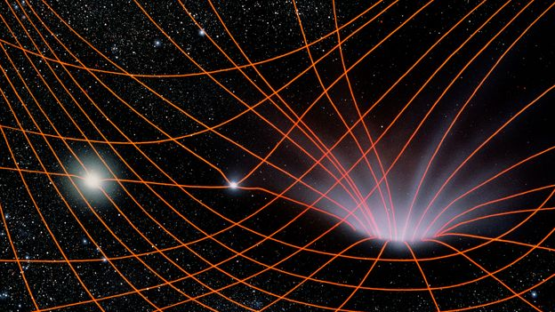

.jpg)
It could happen to anyone. Maybe you're out trying to find a new habitable planet for the human race, or maybe you're just on a long walk and you slip. Whatever the circumstances, at some point we all find ourselves confronted with the age-old question: what happens when you fall into a black hole?
You might expect to get crushed, or maybe torn to pieces. But the reality is stranger than that. The instant you entered the black hole, reality would split in two. In one, you would be instantly incinerated, and in the other you would plunge on into the black hole utterly unharmed.
A black hole is a place where the laws of physics as we know them break down. Einstein taught us that gravity warps space itself, causing it to curve. So given a dense enough object, space-time can become so warped that it twists in on itself, burrowing a hole through the very fabric of reality.
A massive star that has run out of fuel can produce the kind of extreme density needed to create such a mangled bit of world. As it buckles under its own weight and collapses inward, space-time caves in with it. he gravitational field becomes so strong that not even light can escape, rendering the region where the star used to be profoundly dark: a black hole.
"
As you go deeper
into the black hole,
space becomes ever more curvy.
"
The outermost boundary of the hole is its event horizon, the point at which the gravitational force precisely counteracts the light's efforts to escape it. Go closer than this, and there's no escape.
The event horizon is ablaze with energy. Quantum effects at the edge create streams of hot particles that radiate back out into the universe. This is called Hawking radiation, after the physicist Stephen Hawking, who predicted it. Given enough time, the black hole will radiate away its mass, and vanish.
As you go deeper into the black hole, space becomes ever more curvy until, at the centre, it becomes infinitely curved. This is the singularity. Space and time cease to be meaningful ideas, and the laws of physics as we know them — all of which require space and time — no longer apply.
What happens here, no one knows. Another universe? Oblivion? The back of a bookcase? It's a mystery.
So what happens if you accidentally fall into one of these cosmic aberrations? Let's start by asking your space companion — we'll call her Anne — who watches in horror as you plunge toward the black hole, while she remains safely outside. From where she's floating, things are about to get weird. As you accelerate toward the event horizon, Anne sees you stretch and contort, as if she were viewing you through a giant magnifying glass. What's more, the closer you get to the horizon the more you appear to move in slow motion.
"
Before you ever cross
over into the black hole's
darkness, you're reduced
to ash
"
You can't shout to her, as there's no air in space, but you might try flashing her a Morse message with the light on your iPhone (there's an app for that). However, your words reach her ever more slowly, the light waves stretching to increasingly lower and redder frequencies: "Alright, a l r i g h t, a l r i…" When you reach the horizon, Anne sees you freeze, like someone has hit the pause button. You remain plastered there, motionless, stretched across the surface of the horizon as a growing heat begins to engulf you.
According to Anne, you are slowly obliterated by the stretching of space, the stopping of time and the fires of Hawking radiation. Before you ever cross over into the black hole's darkness, you're reduced to ash. But before we plan your funeral, let's forget about Anne and view this gruesome scene from your point of view. Now, something even stranger happens: nothing.